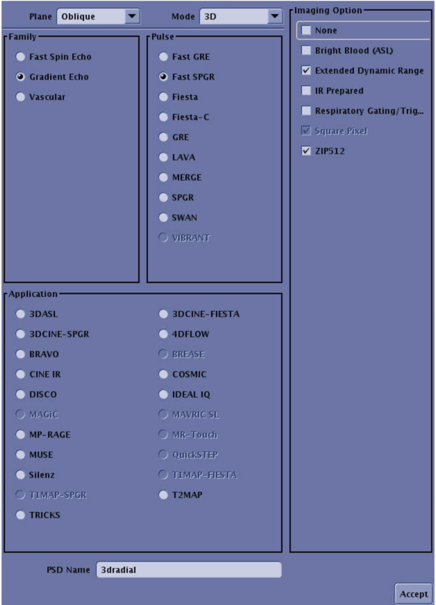
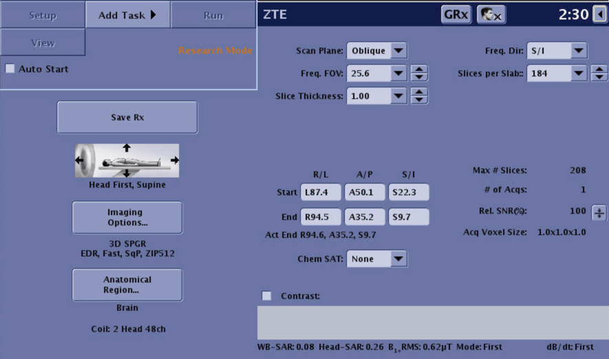
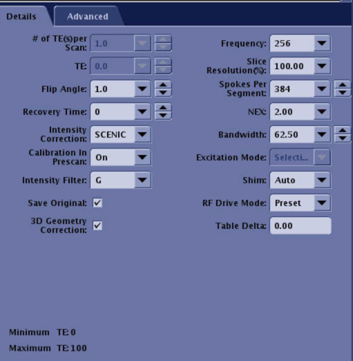
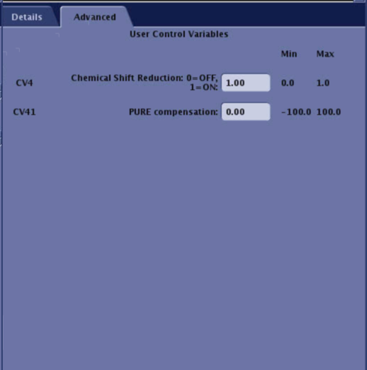

MRI Sequences
Basics
The T1W sequence must be 1-mm isotropic. Otherwise, some parts of the processing may fail. Overall, it is highly recommended that all MRI sequences used in the planning with BabelBrain to be 1-mm isotropic,
ZTE for GE Scanners
There are two variants of the ZTE sequences that are emerging with GE scanners: 3dradial and oZTE. Both are technically equivalent, but they are postprocessed by the GE console differently. The recommended sequence is 3dradial (as this is one we have much more experience in UCalgary) as oZTEo is still under exploration. However, not every site will have access to all sequences.
3dradial
The recommended ZTE sequence is derived from a 3dradial GE PSD, with saggital orientation, reconstruction matrix of 256x256, receiver bandwidth of 62.5 kHz (pixel bandwith of 244 Hz), NEX=3.5, with chemical shift correction enabled, and using SCENIC intensity correction (PURE is also acceptable). The exported settings are available in <a href="GE_Protocol.pdf" target="_blank"GE_Protocol.pdf and in the protocol GE_protocol.tar file. While the protocol file is the most rigorous approach to reproduce the sequence, please note the protocol file is not backwards compatible with GE DV versions of the console. Be sure of reaching your local GE Clinical Scientist to assist if using the protocol file.
VERY IMPORTANT: The number of slabs and slice resolution are not exported in the parameters. Please use Slices per slab = 184, and match the same for the T1W and T2W scans. Use Slice Resolution = 100%, to keep the acquisition 1mm isotropic
Below there are screnshots of the console showing how the sequence should appear




oZTEo
The exported settings are available in GE_oZTEo_Protocol.pdf. The oZTEo sequence inverts the MRI signal by default, so it is important to activate the advanced option Invert ZTE, otherwise it will produce a crash in BabelBrain.
PETRA for Siemens Scanners
IMPORTANT NOTE. We are seeing some sites obtaining pseudo CTs with too high HU values using this PETRA sequence. We are still investigating for a fix. Please let us know if you are experiencing this issue.
We recommend using the EXAR1 file available at the UCL's PETRA-TO-CT Github repository. A local copy is also provided for convenience.